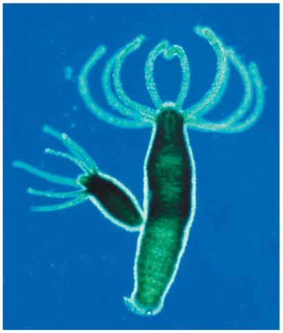
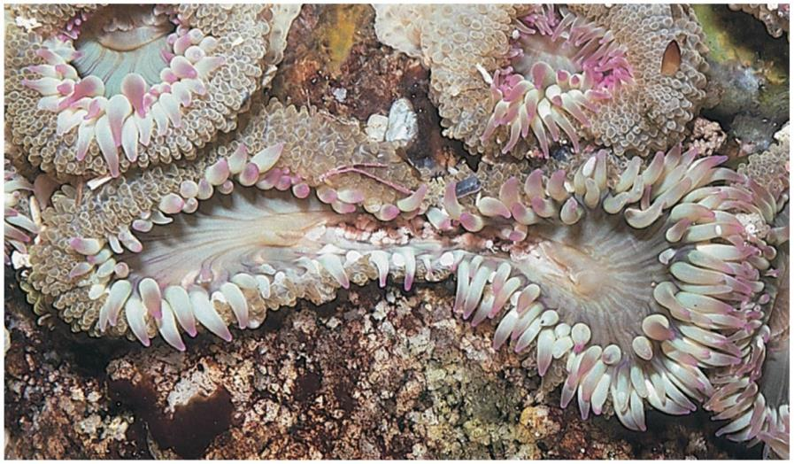
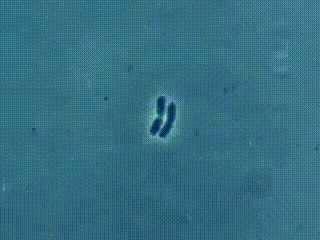
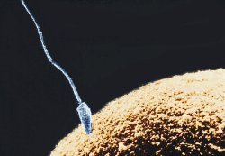

4.2 Two Ways to Make a Copy of Yourself
Chapter 4.1 gave you a process that makes an exact copy of a cell. For a great many organisms, that is all reproduction ever needs to be. This chapter asks why the rest of us do something so much more complicated — and answers it with a model you can run, rather than a list of advantages to memorise.
The two definitions, and the one difference that matters
Asexual reproduction needs one parent. The offspring is produced by mitosis, so it is genetically identical to the parent — a clone.
Sexual reproduction needs two parents, or at least two sex cells. Each parent contributes a gamete — a sperm or an egg — carrying half the usual number of chromosomes. The two gametes fuse at fertilisation to make a zygote with the full number restored, and that zygote is genetically different from both parents.
![Two panels. Left, sexual reproduction — two parents: a father cell holding four blue chromosomes, two long and two short, and a mother cell holding four pink ones, two long and two short, both labelled 2n. An arrow labelled meiosis leads from the father to a sperm carrying two blue chromosomes, one long and one short, labelled n; another leads from the mother to a much larger egg carrying two pink chromosomes, one long and one short, labelled n. Arrows labelled fertilisation bring them together in a zygote holding one long and one short blue chromosome and one long and one short pink one, labelled 2n, and an arrow labelled mitosis leads to a cluster of offspring cells with the same mix. Beneath: offspring, different from both parents. Right, asexual reproduction — one parent: a parent cell with four green chromosomes, labelled 2n, and arrows labelled mitosis to two offspring cells with exactly the same four green chromosomes, labelled 2n. Beneath: offspring, identical to the parent.](../images/u4/two-routes.jpeg)
The diagram above replaces one used in the original course materials, which was correct in every respect except one: it labelled the egg cell "Female Sperm". There is no such thing. The two gametes are the sperm and the egg (also called the ovum), and Chapter 4.7 explains exactly how each one is made and why they are such different sizes.
Count them yourself
Figure 4.10 makes one claim worth testing: sexual reproduction is the only route where the chromosome number goes down and then back up. Try it on an organism small enough to count — just four chromosomes in each body cell. Commit to your numbers before anything is revealed.
Two routes: count the chromosomes
InteractiveAsexual reproduction, and how many ways there are to do it
Asexual reproduction is not one method. It is a family of methods that share one feature: every cell division involved is mitosis, so the offspring is a clone.
| Method | What happens | Example |
|---|---|---|
| Binary fission | The cell copies its DNA and splits straight down the middle into two equal cells. The whole organism is one cell, so dividing is reproducing. | Bacteria, amoeba |
| Budding | A small outgrowth forms on the parent, grows by mitosis until it is a miniature of the parent, and then detaches. | Hydra, yeast |
| Fragmentation | The parent breaks into pieces, and each piece grows into a complete organism. | Sea anemones, starfish, many corals |
| Vegetative propagation | A plant grows a runner, tuber or bulb that becomes an independent plant. | Strawberry runners, potatoes, daffodil bulbs |
| Regeneration | A detached part regrows the whole organism. Not always reproduction — often just repair. | Planaria, some salamanders |



Notice what all five methods have in common and what they lack. They are fast — no partner to find, no courtship, no gametes to make. They are reliable — a genotype that worked for the parent is passed on intact. And they produce no new genetic combinations at all. The only way a clonal line can change is by mutation.
Sexual reproduction, and the price it pays
Sexual reproduction requires machinery that asexual reproduction does not need at all:
- a special kind of cell division that halves the chromosome number, so that combining two gametes restores it rather than doubling it — this is meiosis, and it is Chapter 4.5;
- gametes, made by whole organ systems dedicated to the job — Chapter 4.7;
- hormonal control to decide when to release them — Chapter 4.8;
- and a partner, who has to be found, and who may not agree.

That is a great deal of cost. Worse, there is a purely arithmetical cost that is easy to miss: an asexual organism turns all of its reproductive effort into offspring, while a sexual population needs two individuals to produce each batch. All else being equal, a clonal line should out-reproduce a sexual one and drive it extinct.
It has not. Almost every large, complex organism on Earth reproduces sexually. So sexual reproduction must be buying something that is worth all of that — and the next section is about finding out what.
Run them both and see
Here is a version of the question that can actually be settled. Two populations of beetles, same size, same habitat. One is descended from a single female, so every beetle in it is genetically identical. The other was founded by two dozen different beetles and reproduces sexually.
Four things then happen to both of them. Before each one, decide how much of each population survives. Then find out.
Environment shuffle
Interactive- After round 3, the asexual line is far ahead. Write down the case for asexual reproduction, using the numbers on screen at that point.
- Then run round 4 and write down what happened to that case. Which number changed, and which number had been quietly predicting it all along?
- The fungus in round 4 kills one surface type. Explain why that is catastrophic for a clonal population but survivable for a varied one — without using the word "variety".
- Almost all commercially grown bananas are the same variety, propagated as clones. A fungal disease is currently spreading through banana plantations worldwide. Use this model to explain why that is happening, and why the same disease does not wipe out wild banana populations.
So which is better?
Neither. That is the answer, and it is not a dodge — it is the point of the whole chapter. Each strategy is better under conditions the other is worse under, and the conditions are the same two every time: is the environment changing, and are you already well suited to it?
| Asexual | Sexual | |
|---|---|---|
| Parents needed | One | Two |
| Cell division involved | Mitosis only | Meiosis, then fertilisation |
| Offspring | Genetically identical clones | Genetically different from parents and from each other |
| Speed | Fast — no partner, no courtship, no gametes | Slow, and half the population may not bear young at all |
| Energy cost | Low | High |
| Advantage | Rapid colonisation of a stable, suitable habitat; a proven genotype passed on intact | Variation, so some offspring may survive a change that kills the rest |
| Disadvantage | A single disease or change can destroy the whole population, because they are all the same | Costly, slow, and a good combination of alleles can be broken up as easily as a bad one |
| Best when | Conditions are stable and already favourable | Conditions change, or disease is present |
"Sexual reproduction produces variation so the species can adapt" is the wrong shape of sentence. Nothing is planning ahead. No organism produces varied offspring in order to survive a future disaster it cannot know about.
What actually happens is much simpler. Sexual reproduction produces varied offspring because of how meiosis and fertilisation work. When conditions change, some of that existing variation happens to fit the new conditions, and those individuals leave more offspring. The variation is already there before it is needed, and most of it is useless. Selection is what makes it look purposeful afterwards.
Plenty of organisms refuse to choose. Aphids reproduce asexually all summer, when conditions are good and speed matters, and switch to sexual reproduction in autumn, producing eggs that overwinter. Many plants do both. Some species of whiptail lizard have given up males entirely. The two strategies are options, not identities.
Check your understanding
Which cell division is involved in asexual reproduction?
Asexual reproduction produces clones, and mitosis is the division that makes identical cells. Meiosis exists to halve the chromosome number for gametes, and asexual reproduction has no gametes to make.
Follow the sexual route in Figure 4.10 from the two parents through to the cluster of offspring cells. Which divisions does it use?
Both routes end in mitosis, because mitosis is how any organism builds more of itself. What marks the sexual route out is the step in front of it — the one division that takes the chromosome number down, so that fertilisation can put it back up rather than doubling it.
A greenhouse full of genetically identical cloned tomato plants is doing better than a mixed field nearby. What is the best reason to be cautious about that result?
This is exactly rounds 1 to 3 of the interactive. A clone line wins while nothing changes. The risk is not slow growth — it is that one new pest or disease can take every plant, because every plant is the same plant.
A dense patch of sea anemones has held one rock for years, spreading by splitting into new individuals. A disease arrives that kills anemones with one particular surface type. What does the model predict for the patch?
A clone line's size is a record of how long conditions stayed the same, not a defence against their changing. Every individual on that rock answers the disease in the same way, so there is only one answer to be had — which is why round 4 undoes three rounds of winning in a single step.
Why must gametes have half the chromosome number of a body cell?
Fertilisation adds two gametes together. If each carried a full set, the zygote would have twice as many chromosomes as its parents, and its own children twice as many again. Halving in meiosis is what keeps the number constant across generations.
The organism in Figure 4.10 has four chromosomes in each body cell. How many chromosomes are in one of its sperm, and how many in the zygote that sperm helps to make?
Meiosis takes the number down and fertilisation puts it back, so the zygote matches the parents it came from rather than exceeding them. That down-and-up is the arithmetic signature of the sexual route, and it is the only place in biology where a cell's chromosome number is deliberately reduced.
Which statement is scientifically accurate?
Variation costs something and only pays off under change. Nothing is more advanced than anything else — bacteria have been reproducing asexually for billions of years and are doing fine — and nothing is choosing.
Aphids reproduce asexually through the summer and sexually in the autumn. Which account of that switch is scientifically accurate?
An organism that can do both exposes what the trade-off really is: two options with different prices, taken up and put down as conditions allow. Cloning is the cheap option while the summer holds, and the expensive one is worth its cost only when conditions stop holding still.
- A gardener takes cuttings from one rose bush and grows twenty new plants. Are those plants siblings? Explain your answer using the words clone and mitosis.
- Give one situation in which you would expect asexual reproduction to be favoured by natural selection, and one in which you would expect sexual reproduction to be. Justify both.
- Sexual reproduction halves an individual's reproductive output compared with cloning. Explain, using the model you ran, why it persists anyway.
Where this goes next
This chapter has raised a debt that the rest of the unit has to pay. It has claimed that sexual reproduction produces offspring that are genetically different, and it has shown you what that difference is worth — but it has not said where the difference comes from. That is Chapters 4.5 and 4.6.
First, though, there is unfinished business with mitosis. Chapter 4.1 described a process that copies a cell exactly, and this chapter has treated that as an unmixed good. It is not. A process that makes cells divide is a process that has to be stopped, precisely and constantly, in every one of your 37 trillion cells. Chapter 4.3 is about what stops it, and what happens when the stopping fails.